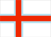
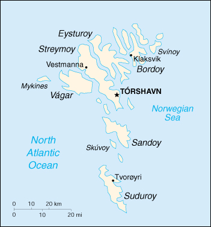

{kind=link}


| Faroe Islands |
 |
|
|  | |
| Introduction |
Background: The population of the Faroe Islands is largely descended from Viking settlers who arrived in the 9th century. The islands have been connected politically to Denmark since the 14th century. A high degree of self-government was attained in 1948.
| Geography |
Location: Northern Europe, island group between the Norwegian Sea and the north Atlantic Ocean, about one-half of the way from Iceland to Norway
Geographic coordinates: 62 00 N, 7 00 W
Map references: Europe
Area:
total:
1,399 sq km
land:
1,399 sq km
water:
0 sq km (some lakes and streams)
Area - comparative: eight times the size of Washington, DC
Land boundaries: 0 km
Coastline: 1,117 km
Maritime claims:
exclusive fishing zone:
200 nm
territorial sea:
3 nm
Climate: mild winters, cool summers; usually overcast; foggy, windy
Terrain: rugged, rocky, some low peaks; cliffs along most of coast
Elevation extremes:
lowest point:
Atlantic Ocean 0 m
highest point:
Slaettaratindur 882 m
Natural resources: fish, whales, hydropower
Land use:
arable land:
6%
permanent crops:
0%
permanent pastures:
0%
forests and woodland:
0%
other:
94% (1996)
Irrigated land: 0 sq km
Natural hazards: NA
Environment - current issues: NA
Geography - note: archipelago of 17 inhabited islands and one uninhabited island, and a few uninhabited islets; strategically located along important sea lanes in northeastern Atlantic; precipitous terrain limits habitation to small coastal lowlands
| People |
Population: 45,296 (July 2000 est.)
Age structure:
0-14 years:
23% (male 5,233; female 5,163)
15-64 years:
63% (male 15,270; female 13,382)
65 years and over:
14% (male 2,788; female 3,460) (2000 est.)
Population growth rate: 0.83% (2000 est.)
Birth rate: 13.58 births/1,000 population (2000 est.)
Death rate: 8.7 deaths/1,000 population (2000 est.)
Net migration rate: 3.38 migrant(s)/1,000 population (2000 est.)
Sex ratio:
at birth:
1.05 male(s)/female
under 15 years:
1.01 male(s)/female
15-64 years:
1.14 male(s)/female
65 years and over:
0.81 male(s)/female
total population:
1.06 male(s)/female (2000 est.)
Infant mortality rate: 6.94 deaths/1,000 live births (2000 est.)
Life expectancy at birth:
total population:
78.43 years
male:
74.96 years
female:
81.92 years (2000 est.)
Total fertility rate: 2.32 children born/woman (2000 est.)
Nationality:
noun:
Faroese (singular and plural)
adjective:
Faroese
Ethnic groups: Scandinavian
Religions: Evangelical Lutheran
Languages: Faroese (derived from Old Norse), Danish
Literacy:
definition:
NA
total population:
NA%
male:
NA%
female:
NA%
note:
similar to Denmark proper
| Government |
Country name:
conventional long form:
none
conventional short form:
Faroe Islands
local long form:
none
local short form:
Foroyar
Data code: FO
Dependency status: part of the Kingdom of Denmark; self-governing overseas administrative division of Denmark since 1948
Government type: NA
Capital: Torshavn
Administrative divisions: none (part of the Kingdom of Denmark; self-governing overseas administrative division of Denmark)
Independence: none (part of the Kingdom of Denmark; self-governing overseas administrative division of Denmark)
National holiday: Birthday of the Queen, 16 April (1940)
Constitution: 5 June 1953 (Danish constitution)
Legal system: Danish
Suffrage: 18 years of age; universal
Executive branch:
chief of state:
Queen MARGRETHE II of Denmark (since 14 January 1972), represented by High Commissioner Bente KLINTE, chief administrative officer (since NA)
head of government:
Prime Minister Anfinn KALLSBERG (since 9 May 1998)
cabinet:
Landsstyri elected by the Faroese Parliament
elections:
the monarch is hereditary; high commissioner appointed by the monarch; following legislative elections, the leader of the party that wins the most seats is usually elected prime minister by the Faroese Parliament; election last held 30 April 1998 (next to be held NA 2002)
election results:
Anfinn KALLSBERG elected prime minister; percent of parliamentary vote - NA
Legislative branch:
unicameral Faroese Parliament or Logting (32 seats; members are elected by popular vote on a proportional basis from the seven constituencies to serve four-year terms)
elections:
last held 30 April 1998 (next to be held by NA July 2002)
election results:
percent of vote by party - Republican Party 23.8%, People's Party 21.3%, Social Democratic Party 21.9%, Coalition Party (Union Party, Labor Front, Home Rule Party) 18%; seats by party - Republican Party 8, People's Party 8, Social Democratic Party 7, Coalition Party 6, other parties 3
note:
election of 2 seats to the Danish Parliament was last held on 11 March 1998 (next to be held by NA 2002); results - percent of vote by party - NA; seats by party - Social Democratic Party 1, People's Party 1
Judicial branch: none
Political parties and leaders: Center Party [Tordur NICLASEN]; Christian People's Party [Niels Pauli DANIELSEN]; Home Rule Party [Helena Dam A. NEYSTABO]; Labor Front [leader NA]; People's Party [Oli BRECKMANN]; Republican Party [Finnbogi ISAKSON]; Social Democratic Party [Joannes EIDESGAARD]; The Faroese Party [Olavur CHRISTIANSEN]; Union Party [Edmund JOENSEN]
International organization participation: NC, NIB
Diplomatic representation in the US: none (self-governing overseas administrative division of Denmark)
Diplomatic representation from the US: none (self-governing overseas administrative division of Denmark)
Flag description: white with a red cross outlined in blue that extends to the edges of the flag; the vertical part of the cross is shifted to the hoist side in the style of the Dannebrog (Danish flag)
| Economy |
Economy - overview: After the severe economic troubles of the early 1990s, brought on by a drop in the vital fish catch, the Faroe Islands have come back in the last few years, with unemployment down to 5% in mid-1998. Nevertheless, the almost total dependence on fishing means the economy remains extremely vulnerable. The Faroese hope to broaden their economic base by building new fish-processing plants. Oil finds close to the Faroese area give hope for deposits in the immediate area, which may lay the basis to sustained economic prosperity. The Faroese are supported by a substantial annual subsidy from Denmark.
GDP: purchasing power parity - $700 million (1996 est.)
GDP - real growth rate: 6% (1996 est.)
GDP - per capita: purchasing power parity - $16,000 (1996 est.)
GDP - composition by sector:
agriculture:
20%
industry:
16%
services:
64% (1996 est.)
Population below poverty line: NA%
Household income or consumption by percentage share:
lowest 10%:
NA%
highest 10%:
NA%
Inflation rate (consumer prices): 2.8% (1996 est.)
Labor force: 20,500 (1996 est.)
Labor force - by occupation: largely engaged in fishing, manufacturing, transportation, commerce
Unemployment rate: 5% (1998 est.)
Budget:
revenues:
$467 million
expenditures:
$468 million, including capital expenditures of $11 million (1996 est.)
Industries: fishing, shipbuilding, construction, handicrafts
Industrial production growth rate: NA%
Electricity - production: 186 million kWh (1998)
Electricity - production by source:
fossil fuel:
53.76%
hydro:
45.7%
nuclear:
0%
other:
0.54% (1998)
Electricity - consumption: 173 million kWh (1998)
Electricity - exports: 0 kWh (1998)
Electricity - imports: 0 kWh (1998)
Agriculture - products: milk, potatoes, vegetables; sheep; salmon, other fish
Exports: $362 million (f.o.b., 1995)
Exports - commodities: fish and fish products 92%, animal feedstuffs, transport equipment (ships)
Exports - partners: Denmark 31%, UK 25%, Germany 9%, France 7%, Spain 6%, US 2% (1996)
Imports: $315.6 million (c.i.f., 1995)
Imports - commodities: machinery and transport equipment 17.0%, consumer goods 33%, raw materials and semi-manufactures 26.9%, fuels 11.4%, fish and salt 6.7%
Imports - partners: Denmark 33%, Norway 18%, UK 8% Germany 9%, Sweden 5%, US 2% (1996)
Debt - external: $767 million (1995 est.)
Economic aid - recipient: $150 million (annual subsidy from Denmark) (1995)
Currency: 1 Danish krone (DKr) = 100 oere
Exchange rates: Danish kroner (DKr) per US$1 - 7.336 (January 2000), 6.976 (1999), 6.701 (1998), 6.604 (1997), 5.799 (1966), 5.602 (1995)
Fiscal year: calendar year
| Communications |
Telephones - main lines in use: 22,000 (1995)
Telephones - mobile cellular: 2,558 (1995)
Telephone system:
good international communications; good domestic facilities
domestic:
digitalization was to have been completed in 1998
international:
satellite earth stations - 1 Orion; 1 fiber-optic submarine cable linking the Faroe Islands with Denmark and Iceland
Radio broadcast stations: AM 1, FM 13, shortwave 0 (1998)
Radios: 26,000 (1997)
Television broadcast stations: 7 (plus 51 low-power repeaters) (September 1995)
Televisions: 15,000 (1997)
Internet Service Providers (ISPs): NA
| Transportation |
Railways: 0 km
Highways:
total:
458 km
paved:
450 km
unpaved:
8 km (1995 est.)
Ports and harbors: Torshavn, Klaksvik, Tvoroyri, Runavik, Fuglafjorour
Merchant marine:
total:
6 ships (1,000 GRT or over) totaling 22,853 GRT/13,481 DWT
ships by type:
cargo 2, petroleum tanker 1, refrigerated cargo 1, roll-on/roll-off 1, short-sea passenger 1 (1999 est.)
Airports: 1 (1999 est.)
Airports - with paved runways:
total:
1
914 to 1,523 m:
1 (1999 est.)
| Military |
Military branches: no organized native military forces; only a small Police Force and Coast Guard are maintained
Military expenditures - dollar figure: $NA
Military expenditures - percent of GDP: NA%
Military - note: defense is the responsibility of Denmark
| Transnational Issues |
Disputes - international: none